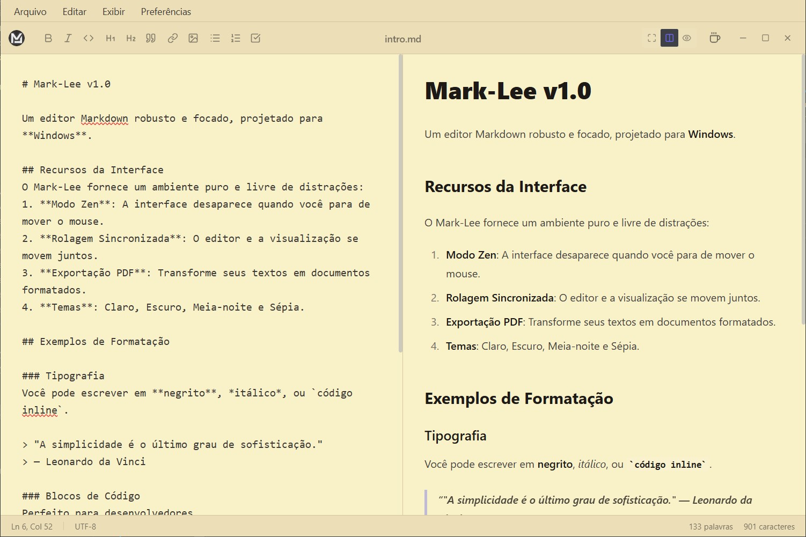

1. Abra ou crie um arquivo
Use o menu de arquivo, o modo abas e o sidebar para navegar no seu workspace.
Mark-Lee é um editor Markdown open source e gratuito para quem escreve todos os dias e quer velocidade, clareza e exportação limpa.

Instale, escreva e publique sem complicação.
Use o menu de arquivo, o modo abas e o sidebar para navegar no seu workspace.
Busca/substituição avançada, snippets e modos de interface para sua rotina de escrita.
Exporte para Markdown, HTML ou PDF a partir de um fluxo único de publicação.
Os links abaixo sincronizam automaticamente com a release mais recente.
Contribuições são bem-vindas: issues, discussões, PRs e revisões de UX.
Dois projetos recentes destacados automaticamente (exceto o Mark-Lee).